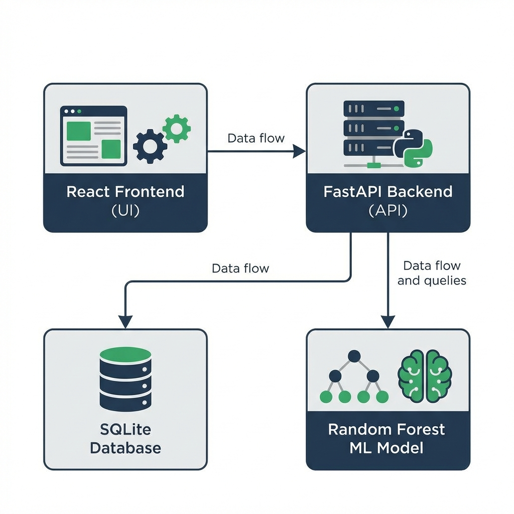

Title: Career Drift Detection: An AI-Powered Learning Path
Alignment System
1. Abstract
The "Career Drift Detection" system is designed to help students stay on track with their professional
goals.
In the modern learning environment, students often consume vast amounts of content across diverse platforms,
making it easy to deviate from their target career path. This system leverages Machine Learning (Random
Forest Classifier)
to analyze student activities and calculate a "Drift Score." By monitoring the relevance of learning
activities
against a target career profile, the system provides early warnings and insights, ensuring students remain
focused on the skills most critical for their professional success.
2. Architectural Design
The system follows a modern decoupled architecture using React, FastAPI, SQLModel, and a Random Forest
Engine.

Figure 1: High-Level System Architecture
3. Entity-Relationship (ER) Diagram
The data model focuses on the relationship between students and their logged activities.